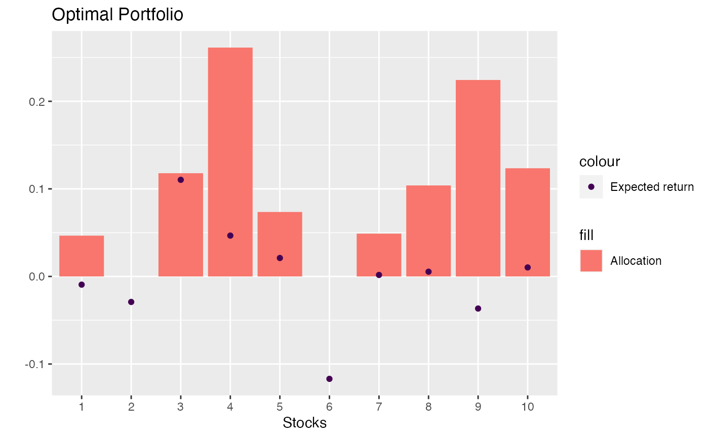

problem-markowitz.RmdHere we solve a simple Markowitz Portfolio Optimization Problem. I really have no idea about security selection, but it is a good example of a continuous quadratic program.
This example follows the formulation from here.
We have a number of \(n\) stocks. Each has an expected value of \(e_i\) and a covariance matrix \(C_{i,j}\). The question is now: can we construct a portfolio of stocks that gives us at least a return of \(\mu\) but with minimal variance? In order to do this we seek weights for our stocks that minimize the risk while giving us a lower bound on the expected return.
\[ \begin{equation*} \begin{array}{ll@{}ll} \text{min} & \displaystyle\sum\limits_{i=1}^{n}\sum\limits_{j=1}^{n}C_{i,j} \cdot x_{i} \cdot x_{j} & &\\ \text{subject to}& \displaystyle\sum\limits_{i=1}^{n} e_i \cdot x_{i} \geq \mu& &\\ & \displaystyle\sum\limits_{i=1}^{n} x_{i} = 1& & \\ & 0 \leq x_{i} \leq 1 &\forall i=1, \ldots, n & \end{array} \end{equation*} \]
First we generate some data
set.seed(42)
n <- 10
returns <- matrix(
rnorm(n * 20,
mean = runif(n, 0.01, 0.03),
sd = runif(n, 0.1, 0.4)),
ncol = n) # 20 time periods
# each col is a stock time series
e <- colMeans(returns)
C <- cov(returns)
min_mu <- 0.02
library(rmpk)
library(ROI.plugin.quadprog)
solver <- ROI_optimizer("quadprog")
model <- optimization_model(solver)
x <- model$add_variable("x", i = 1:n, lb = 0, ub = 1)
model$set_objective(sum_expr(2 * C[i, j] * x[i] * x[j], i = 1:n, j = 1:n))
model$add_constraint(sum_expr(e[i] * x[i], i = 1:n) >= min_mu)
model$add_constraint(sum_expr(x[i], i = 1:n) == 1)
model$optimize()
(results <- model$get_variable_value(x[i]))
#> name i value
#> 1 x 1 4.656654e-02
#> 2 x 7 4.886324e-02
#> 3 x 5 7.361526e-02
#> 4 x 8 1.039045e-01
#> 5 x 2 3.285331e-18
#> 6 x 10 1.235237e-01
#> 7 x 9 2.243257e-01
#> 8 x 3 1.178596e-01
#> 9 x 6 -1.248999e-18
#> 10 x 4 2.613414e-01
library(ggplot2)
ggplot(results) +
aes(x = factor(i), y = value) +
geom_bar(stat = "identity", aes(fill = "Allocation")) +
geom_point(data = data.frame(i = factor(1:n), value = e), aes(color = "Expected return")) +
xlab("Stocks") +
ylab("") +
scale_fill_discrete() +
scale_color_viridis_d() +
ggtitle("Optimal Portfolio")
Bars are stock allocation and dots are the expected returns. It is a bit strange that the model allocates 20% of our portfolio to a stock with negative expected return - but maybe it reduces the volatility… or it is a bug :)
Do you have any questions, ideas, comments? Or did you find a mistake? Let’s discuss on Github.